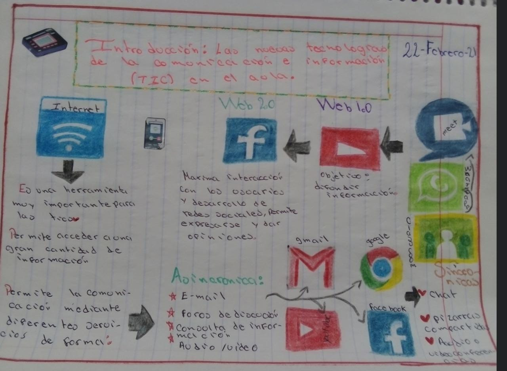
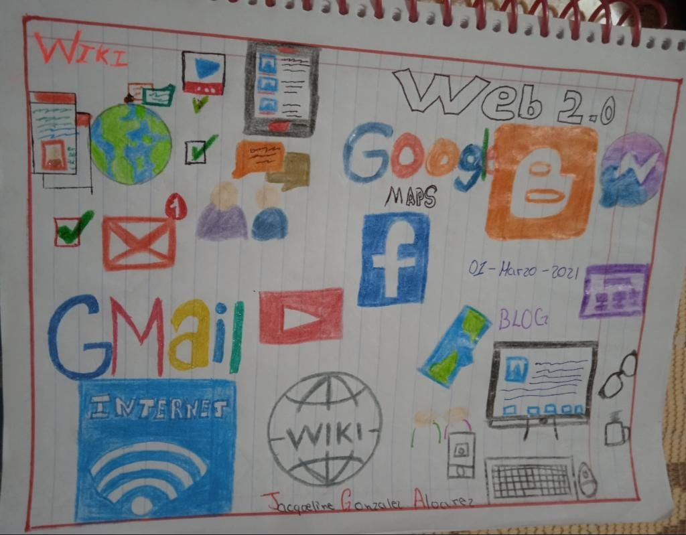

Las tegnologias de Para la informacion Comunicación (7/0) co ind soment Chervestigacion, han transfo manera cer tegenood la rmado de orda cotidiana y opera de los seres homanos, algunos ejemplos cotcon/ o de los telefonos mour les, los Computadores, el internet. son herramientas de comunicación, a plicaciones como Google maps museos purtuales, entre otros, que nos permiten conocer google earth.
Estas transformaciones han ido permeando los ámbitos profecionales y educatives para facilitar nuestros desem peños en carias aseasona de eltro tiene que ver con el acceso a la información, otra con el pensami ento de datos. Y otra con bi comenroaction in the diata concronita y Botinceontoa, para difundir información o para contactar con coalquier Persona en coalgover logar del mondo. De hecho ya nos co necesario compartir para desarrollar el mismo espacio de trabajo o para elaborar algon topo de escrito o Proyecto e incloso es tal el impacto de kis TIC que cada vez estudiantes llegan a corsa 500 estudeos de pregrado o postgrado, orn haber constido al copricio fisico de ona universidad Esta octacion ba ha mdo nicha al camps de Vacestor gación cientifica donde cada vez ma los academicas strician bs TIC Para resolver problemas propios de la gestion la investigation me lique el ooo de este tematice Fener lagitos Derca dispendios en terminos economicos y de frempo.
 